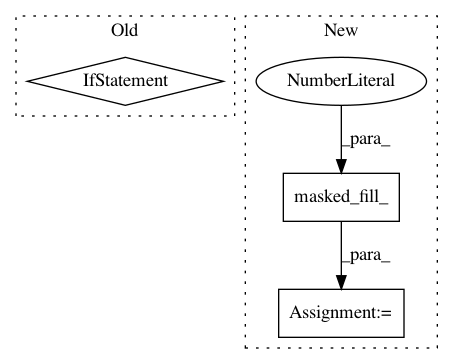

8db7b1c7f8af2d8158584f1ea7f2aaf8f4116f11,fairseq/criterions/label_smoothed_cross_entropy.py,LabelSmoothedCrossEntropyCriterion,compute_loss,#LabelSmoothedCrossEntropyCriterion#Any#Any#Any#Any#,50
Before Change
non_pad_mask = target.ne(self.padding_idx)
nll_loss = -lprobs.gather(dim=-1, index=target)[non_pad_mask]
smooth_loss = -lprobs.sum(dim=-1, keepdim=True)[non_pad_mask]
if reduce:
nll_loss = nll_loss.sum()
smooth_loss = smooth_loss.sum()
eps_i = self.eps / lprobs.size(-1)
loss = (1. - self.eps) * nll_loss + eps_i * smooth_loss
return loss, nll_loss
After Change
target = model.get_targets(sample, net_output).view(-1, 1)
non_pad_mask = target.ne(self.padding_idx)
if reduce:
nll_loss = -lprobs.gather(dim=-1, index=target).masked_fill_(1.0-non_pad_mask, 0.0)
nll_loss = nll_loss.sum()
smooth_loss = -lprobs.sum(dim=-1, keepdim=True).masked_fill_(1.0-non_pad_mask, 0.0)
smooth_loss = smooth_loss.sum()
else:
In pattern: SUPERPATTERN
Frequency: 3
Non-data size: 3
Instances
Project Name: pytorch/fairseq
Commit Name: 8db7b1c7f8af2d8158584f1ea7f2aaf8f4116f11
Time: 2019-07-17
Author: taylanbil@google.com
File Name: fairseq/criterions/label_smoothed_cross_entropy.py
Class Name: LabelSmoothedCrossEntropyCriterion
Method Name: compute_loss
Project Name: cornellius-gp/gpytorch
Commit Name: 33ef02d09c16aaf5191115d0a6a3d3a9b6242ba1
Time: 2019-11-08
Author: gardner.jake@gmail.com
File Name: gpytorch/utils/lanczos.py
Class Name:
Method Name: lanczos_tridiag_to_diag